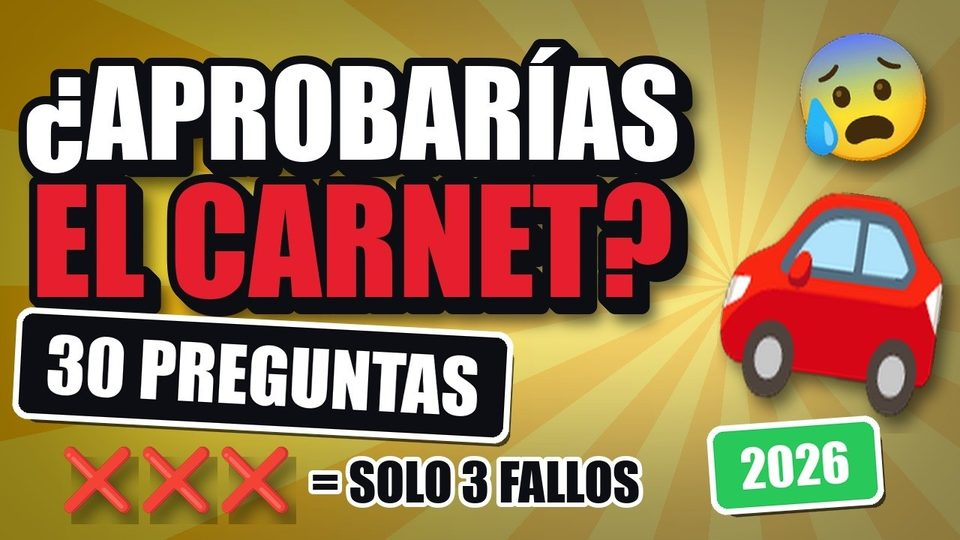
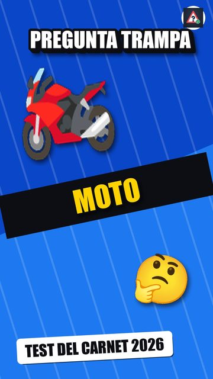
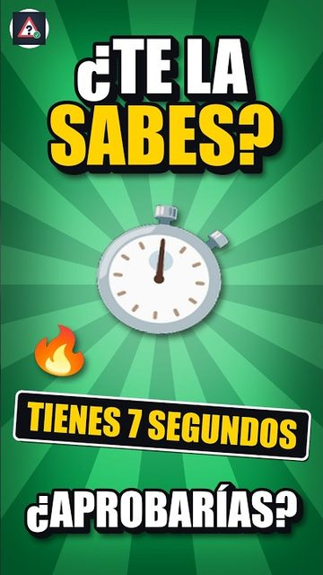
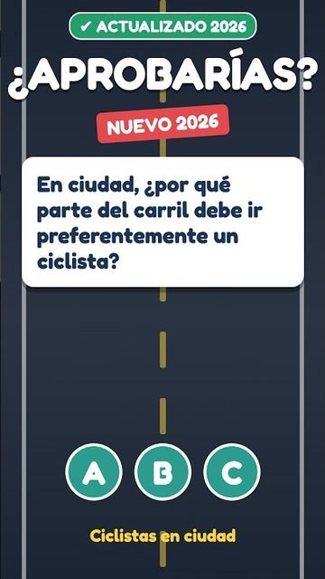
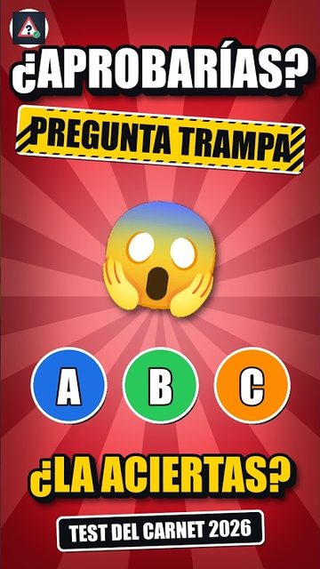
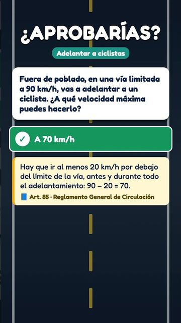
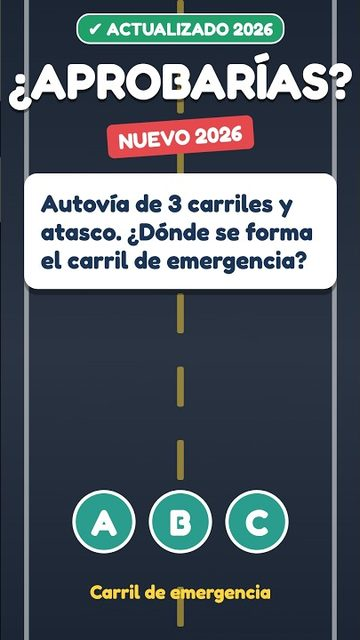
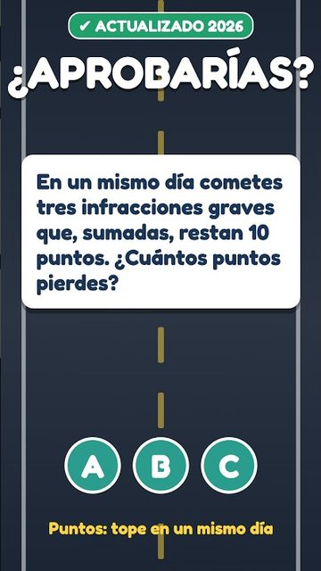
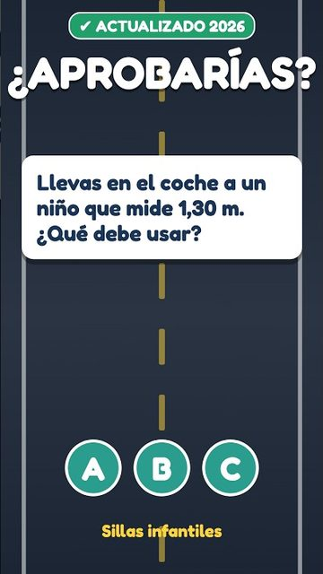
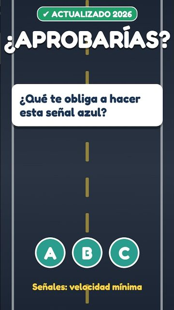

Test del carnet de conducir
¿Aprobarías hoy?
Ponte a prueba con preguntas del teórico del permiso B. Cada respuesta viene explicada y con su artículo del BOE.
30preguntas en el examen
3fallos como máximo
0 €sin registro
Estudia por temas
Elige lo que más te cuesta y practica solo esas preguntas.
Aprende en vídeo
Una pregunta explicada en menos de un minuto.

Examen completoExamen teórico del carnet COMPLETO: 30 preguntas explicadasDuración: 19:39. Cada domingo, un examen nuevo con todas las respuestas explicadas.▶ Hacer el examen aquíMás vídeos test
-

0:38 Seguridad¿Aprobarías esta de moto? -

0:40 Circulación¿Aprobarías esta pregunta del teórico? -

0:33 Adelantamientos¿Aprobarías esta de ciclistas en ciudad? -

0:34 SeñalesVes esta señal cuadrada azul. ¿Qué significa? -

0:42 Adelantamientos¿Aprobarías esta de adelantar a ciclistas? -

0:34 Circulación¿Aprobarías esta de carril de emergencia? -

0:40 Puntos y carnet¿Aprobarías esta de puntos: tope en un mismo día? -

0:39 SeguridadLlevas en el coche a un niño que mide 1,30 m. ¿Qué debe usar? -

0:32 Señales¿Qué te obliga a hacer esta señal azul? - Más preguntas en el canalVer todas
Cómo estudiar con el canal
Un rato al día rinde más que un atracón antes del examen.
- Responde
Haz la pregunta del día antes de ver la solución.
- Entiende
Lee por qué es correcta y qué dice el artículo.
- Repasa
Practica por temas lo que hayas fallado.
- Examínate
Haz el examen completo del domingo y cuenta tus fallos.
Cuándo hay vídeo nuevo
- Lunes a sábadoPregunta del día, a las 19:30
- DomingoExamen completo de 30 preguntas
De dónde salen las respuestas
- Preguntas propias, redactadas a partir de la normativa.
- Comprobadas con el BOE, con el artículo a la vista.